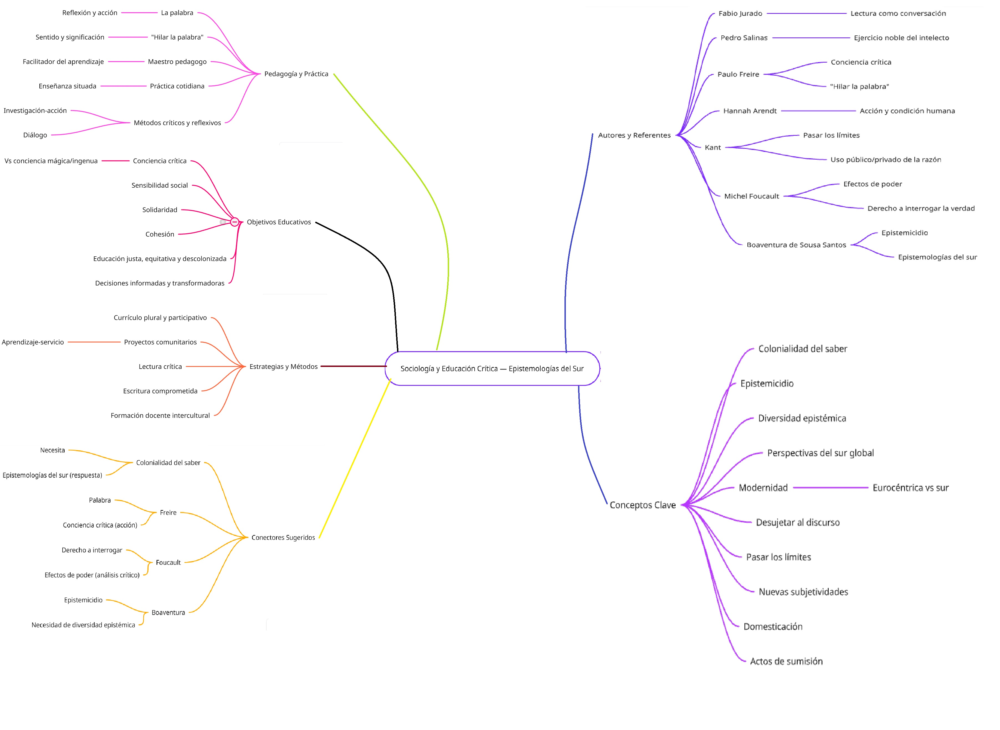

Sociología y Educación Critica: Repensando la realidad desde las epistemologías del sur - Compiló: Mgs: Álvaro Diaz


Actividad
1. Elaborar un glosario con las palabras resaltadas en negrilla en el texto.
Fabio Jurado: Educador y ensayista colombiano que reflexiona sobre la lectura, la escritura y la formación del pensamiento crítico en la educación.Pedro Salinas: Poeta y ensayista español que promovió una visión humanista de la educación y el lenguaje como medios de comprensión profunda del ser humano.
Ejercicio noble del intelecto: Actividad reflexiva y crítica mediante la cual el pensamiento busca comprender, cuestionar y transformar la realidad.
Lectores y escritores críticos: Personas que leen y escriben con reflexión, interpretando los textos desde diferentes perspectivas y cuestionando su sentido y contexto.
Hannah Arendt: Filósofa alemana que analizó el poder, la política y la condición humana, destacando la importancia del pensamiento y la responsabilidad moral.
La crítica: Capacidad de analizar, cuestionar y evaluar ideas, discursos o acciones para comprender sus fundamentos, implicaciones y efectos.
Kant: Filósofo alemán que propuso el pensamiento autónomo y el uso público de la razón como base de la libertad y la madurez intelectual.
Pasar los límites: Superar las fronteras del pensamiento tradicional o impuesto, atreviéndose a explorar nuevas ideas y formas de conocimiento.
Desujetar al discurso: Romper con los discursos dominantes o autoritarios que limitan la libertad del pensamiento y la posibilidad de nuevas interpretaciones.
Actitud de habitar: Disposición consciente de estar presente en el mundo con reflexión, compromiso y sentido crítico.
Habitarme yo mismo: Proceso de autoconocimiento y reflexión interna que permite comprender quién soy y cómo actúo en la sociedad.
Michel Foucault: Filósofo francés que estudió las relaciones entre poder, conocimiento y discurso, mostrando cómo la verdad está ligada a estructuras de dominación.
Derecho de interrogar la verdad: Libertad de cuestionar las verdades establecidas por la sociedad, la ciencia o las instituciones.
Efectos de poder: Consecuencias que surgen cuando el conocimiento o los discursos se usan para controlar o influir en los demás.
Discursos de verdad: Formas en que la sociedad define lo que se considera verdadero, condicionadas por el poder y la historia.
Pensamiento crítico: Capacidad de analizar, cuestionar y reflexionar de manera racional y autónoma para comprender la realidad y transformarla.
Abierto a los vacíos: Actitud de reconocer lo que no se sabe, aceptar la incertidumbre y mantener la mente dispuesta al aprendizaje continuo.
Dogmático: Persona o pensamiento que acepta ideas sin cuestionarlas, cerrándose al diálogo o al cambio.
Disensos y consensos: Procesos de desacuerdo y acuerdo entre individuos o grupos que permiten la construcción colectiva del conocimiento.
Uso público y privado: Concepto kantiano que distingue entre el pensamiento libre (público) y el pensamiento limitado por obligaciones o instituciones (privado).
Ver al mundo: Acto de observar y comprender la realidad desde una mirada reflexiva, crítica y sensible.
Heidegger – el pensar es pensar lo no pensado: Idea que invita a reflexionar más allá de lo evidente, explorando lo desconocido o lo ignorado por la razón tradicional.
Actos de sumisión: Comportamientos que implican obedecer sin cuestionar, renunciando a la autonomía del pensamiento.
Domesticación: Proceso mediante el cual se controla o limita la libertad de las personas a través de normas, ideologías o sistemas de poder.
Nuevas subjetividades: Formas renovadas de comprenderse a sí mismo y al mundo, surgidas del cambio social, cultural y político.
Historia de la crítica: Evolución del pensamiento que ha cuestionado las ideas establecidas, promoviendo la reflexión y la emancipación del conocimiento.
Boaventura de Sousa Santos: Sociólogo portugués que propone las “epistemologías del sur” y critica la dominación del conocimiento occidental.
Epistemicidios: Destrucción o invisibilización de saberes y conocimientos de pueblos no occidentales por causa del colonialismo y el eurocentrismo.
Los principios de la modernidad: Bases del pensamiento europeo moderno que priorizan la razón, la ciencia y el progreso, muchas veces excluyendo otras formas de conocimiento.
El colonialismo europeo: Proceso histórico de dominación política, económica y cultural ejercido por Europa sobre otros continentes.
Colonialismo cultural: Imposición de una cultura dominante sobre otras, eliminando o despreciando sus valores, lenguas y conocimientos.
Experiencias cognitivas: Formas diversas en que las personas y comunidades comprenden y construyen conocimiento a partir de su realidad.
Práctica cotidiana: Conjunto de acciones y hábitos diarios donde se expresan los valores, saberes y relaciones sociales.
Epistemologías del sur: Propuesta de conocimiento que valora los saberes de los pueblos del sur global como válidos y necesarios para construir justicia social.
Estructuras de poder y dominación: Sistemas sociales, políticos o económicos que controlan y limitan la libertad de los individuos o grupos.
Comunidades del sur global: Pueblos y naciones históricamente marginadas por el colonialismo y el capitalismo, portadoras de saberes alternativos.
La palabra: Medio fundamental de expresión, comunicación y construcción del pensamiento crítico y la identidad.
La reflexión y acción: Proceso educativo que une el pensar y el actuar para transformar la realidad de manera consciente.
Hilar la palabra: Construir el discurso con sentido, coherencia y compromiso, tejiendo ideas que aporten a la comprensión social.
Utilizada de manera significativa y relevante: Expresión que alude al uso consciente del lenguaje para comunicar ideas con propósito y valor.
La conciencia crítica: Capacidad de analizar la realidad social, identificar injusticias y actuar para transformarlas.
Proceso de concientización: Desarrollo progresivo mediante el cual una persona toma conciencia de su realidad y su papel en la transformación social.
La conciencia mágica: Etapa de pensamiento que explica la realidad desde creencias sobrenaturales o sin análisis racional.
La conciencia ingenua: Nivel de comprensión en el que se perciben los problemas sin profundizar en sus causas estructurales.
La conciencia crítica: Nivel superior de comprensión en el que el individuo analiza, cuestiona y busca transformar la realidad injusta.
Maestro pedagogo: Educador que guía el aprendizaje desde la reflexión, el diálogo y la construcción colectiva del conocimiento.
Facilitador del aprendizaje: Docente que orienta y apoya el proceso educativo para que los estudiantes construyan su propio conocimiento de forma activa.
2. ¿Cómo pueden las escuelas y los maestros promover la crítica y la reflexión en los estudiantes para que puedan cuestionar las estructuras de poder y dominación que han marginado y excluido a las comunidades del sur global?
Rta: Pueden hacerlo de la siguientes maneras:
Adoptar una pedagogía crítica (modelo freiriano): usar el diálogo, el “método problematizador” y el aprendizaje como acto de reflexión y acción (praxis), no la transmisión pasiva.
Currículo plural y descolonizado: incorporar autores, saberes y experiencias locales (indígenas, afrodescendientes, populares) junto con la tradición occidental.
Trabajo con preguntas reales: diseñar actividades que partan de problemas concretos de la comunidad para conectar teoría y práctica.
Fomentar lectura crítica y producción de texto: enseñar estrategias de lectura que identifiquen supuestos, intereses y efectos de poder en los discursos; promover escritura como herramienta de denuncia y propuesta.
Espacios seguros para el debate: permitir discrepancias, disensos y consensos; enseñar a argumentar respetando la diversidad.
Proyectos comunitarios y aprendizaje-servicio: vincular la escuela con organizaciones y saberes locales para validar experiencias del sur global.
Formación docente continua: capacitar a docentes en métodos críticos, decoloniales y en reconocimiento de la colonialidad del saber.
Evaluaciones formativas y reflexivas: usar diarios reflexivos, portafolios y rúbricas que valoren el pensamiento crítico más que la memorización.
3. ¿De qué manera la sociología desde las epistemologías del sur puede contribuir a la construcción de una educación más justa y equitativa que reconozca y valore los conocimientos y saberes de las comunidades marginadas y oprimidas?.
Rta: La sociología desde las epistemologías del sur puede contribuir a una educación más justa y equitativa de varias maneras:
Visibilizando epistemicidios: la sociología del sur denuncia la aniquilación y desvalorización de saberes locales y exige su restitución en la escuela.
Valorizando diversidad epistémica: propone currículos que incorporen múltiples formas de conocer (prácticas, cosmologías, saberes traductores), no solo conocimiento teórico-científico occidental.
Diseño curricular participativo: invita a comunidades a co-diseñar contenidos y metodologías, legitimando sus lenguas y prácticas.
Políticas educativas informadas: aporta evidencia y marcos teóricos que orienten políticas públicas hacia equidad cultural y lingüística.
Formación de docentes interculturales: prepara profesorado para reconocer, traducir y mediar saberes distintos.
Metodologías híbridas y situadas: promueve métodos que combinen investigación-acción participativa, oralidad, observación y prácticas comunitarias.
Fomento de la justicia epistemológica: transformar la jerarquía del saber para que los estudiantes de comunidades marginadas vean su conocimiento como valioso y legítimo.
4. ¿Cómo pueden los estudiantes y maestros trabajar juntos para crear un espacio de aprendizaje que sea crítico, reflexivo y emancipador, y que permita la construcción de una sociedad más justa y equitativa?.
Rta: Pueden hacerlo de las siguientes maneras:
Cocreación del aula: definir objetivos, normas y proyectos entre profesores y estudiantes; democráticamente decidir qué se estudia y cómo.
Metodologías participativas: debates, mesas redondas, aprendizaje basado en proyectos (PBL), estudios de caso locales y aprendizaje-servicio.
Investigación-acción escolar: estudiantes + docentes investigan problemas reales del barrio o escuela y proponen soluciones prácticas.
Práctica reflexiva habitual: uso de diarios, foros y sesiones de metacognición para que cada participante cuestione sus creencias y roles.
Rotación de roles: permitir que estudiantes planifiquen clases, lideren discusiones y evalúen procesos para fortalecer agencia.
Vinculación con comunidades: talleres con saberes locales, entrevistas a líderes comunitarios, visibilización de prácticas tradicionales.
Evaluación crítica y formativa: retroalimentación continua que valore pensamiento crítico, colaboración y cambios reales.
Clima de confianza y respeto: gestionar el aula para que las voces minoritarias se escuchen y los errores sean oportunidades de aprendizaje.
5. Realizar un mapa mental sobre el texto.
